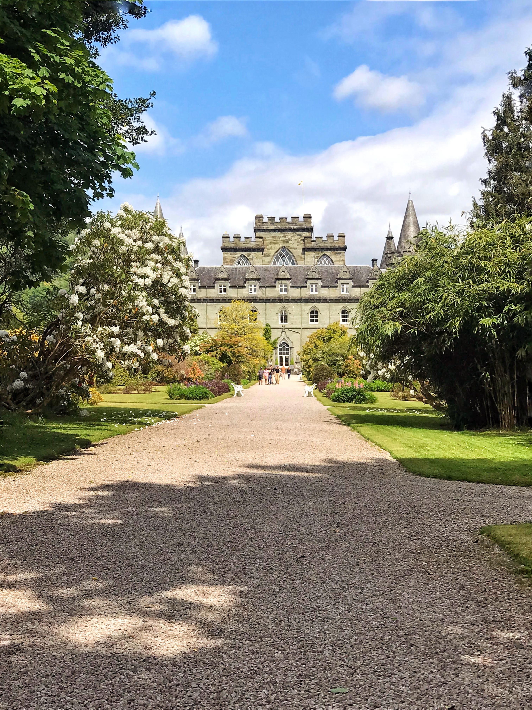
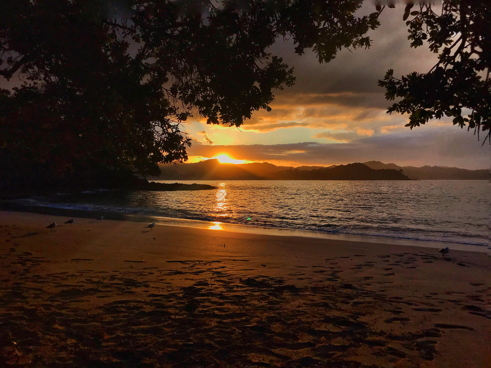
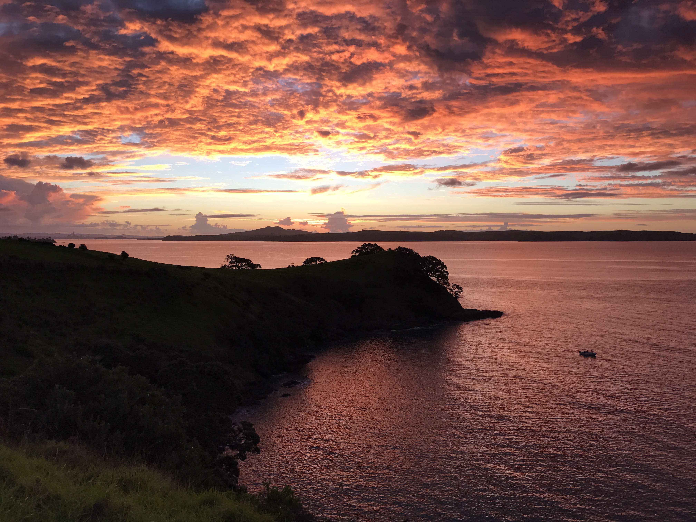
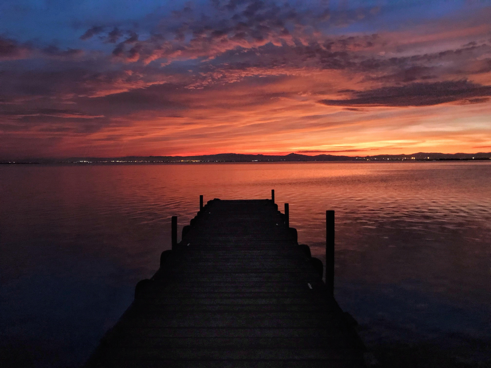
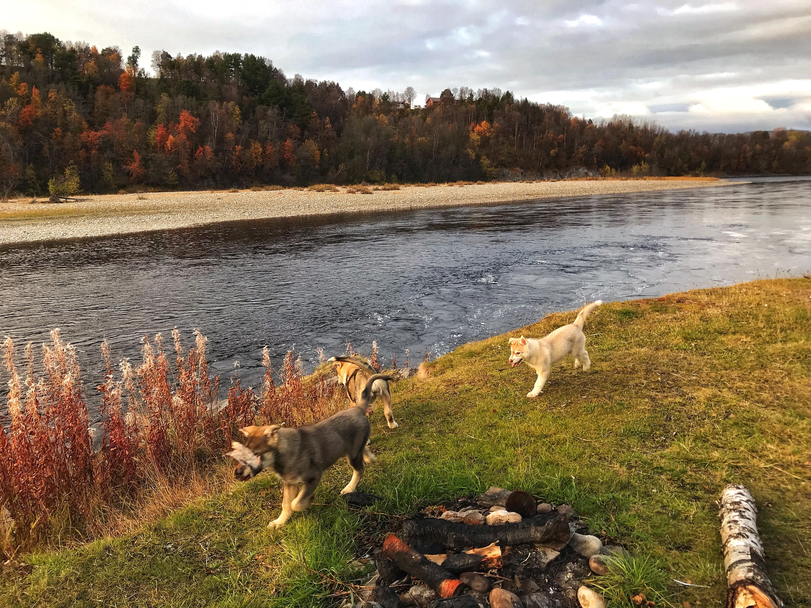
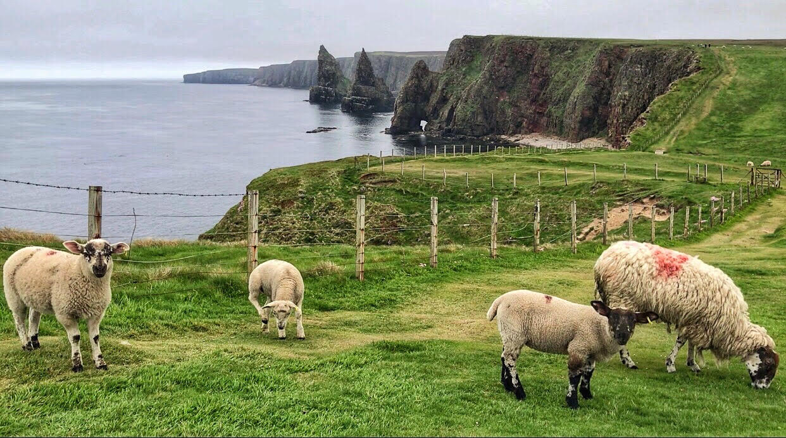

Explore the World Through My Lens
Explore a collection of photographs that tell stories of breathtaking nature scenes, wildlife and architectural wonders.
Historic Buildings
Discover the grandeur of historic architecture that stands as a testament to the past.

Nature
Immerse yourself in the beauty of natural landscapes captured from around the world.
- Sunset
- Lake




Wildlife
Experience the beauty and diversity of wildlife in their natural habitats.

Featured Shots
Explore the location and date of each captivating shot. Immerse yourself in the diverse range of subjects captured through my lens.
| Featured Shots | Location | Date |
|---|---|---|
| Castles | Inveraray Castle | June 1, 2023 |
| Sunset | Waiheke Island | March 28, 2019 |
| Whale Bay | February 19, 2020 | |
| Albufera National Park | October 19, 2019 | |
| Lake | Alta | October 8, 2019 |
| Wildlife | Duncansby Stacks | June 4, 2023 |